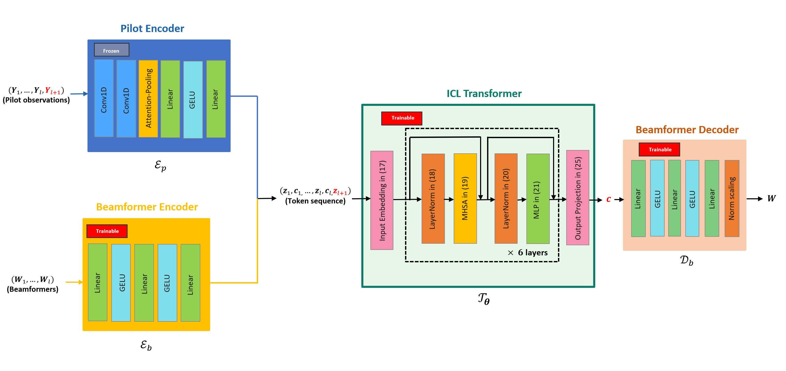
ArXiv 26Self-Evolving In-Context Learning for Direct Pilot-to-Beamformer Design in MU-MISO Systems
ArXiv Preprint (ArXiv), 2026.
I am a second-year Ph.D. student at Columbia University, advised by Prof. Xiaodong Wang. My research focuses on deep-learning for communication, deep-learning for optimization, integrated sensing and communication, and communication security. I also work closely with Prof. Luca Venturino and Dr. Xiao-Yang Liu.
I received my B.Eng. and M.Sc. in Information and Communication at University of Science and Technology of China (USTC), and I was fortunate to work with Prof. Chen Gong and Prof. Zhengyuan Xu there.

ArXiv 26ArXiv Preprint (ArXiv), 2026.
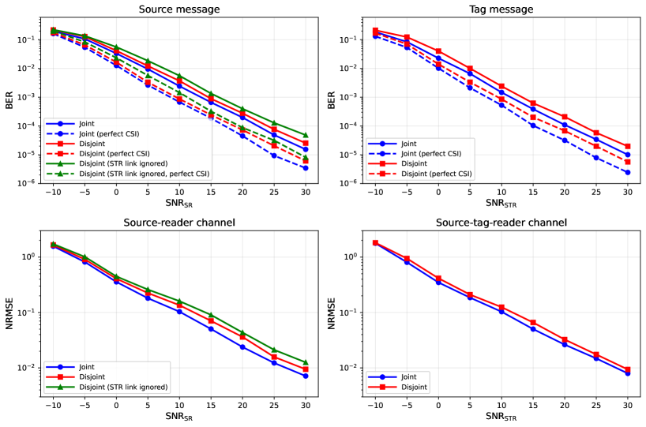
ArXiv 26ArXiv Preprint (ArXiv), 2026.
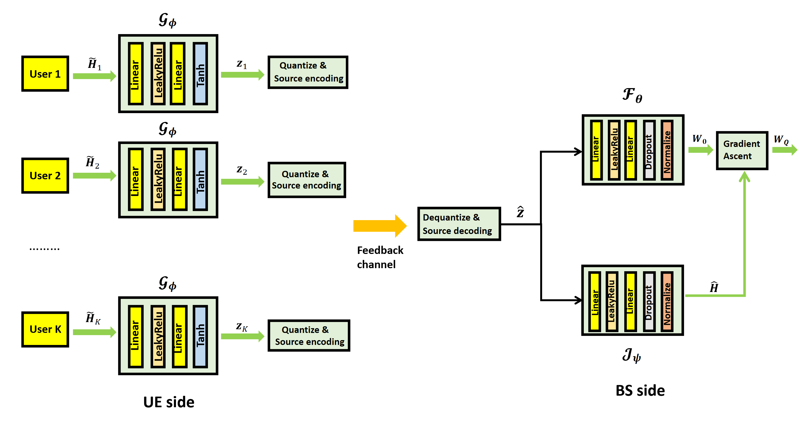
OJCOMS 26IEEE Open Journal of the Communications Society (OJCOMS), 2026.
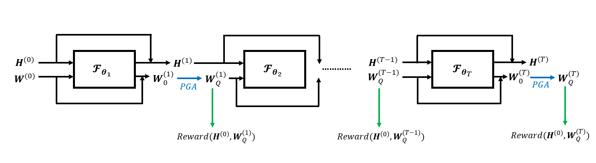
ArXiv 25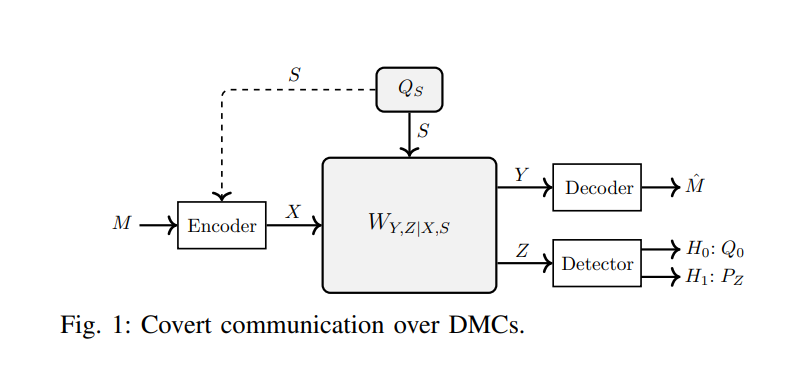
ArXiv 25ArXiv Preprint (ArXiv), 2025.
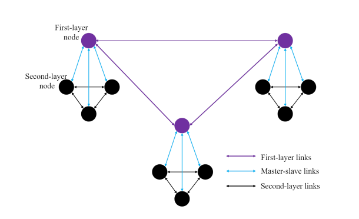
TCOM 25IEEE Transactions on Communications (TCOM), 2025.
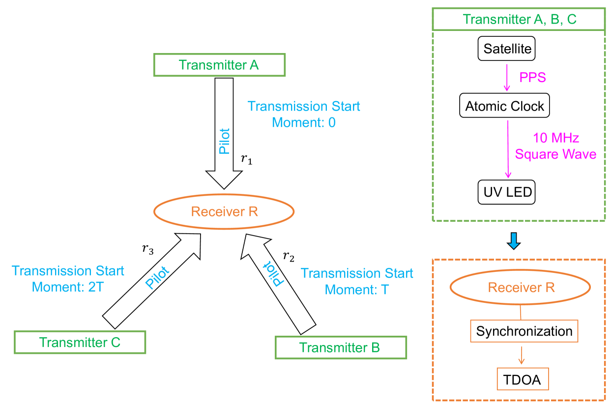
OE 24Optics Express (OE), 2024.
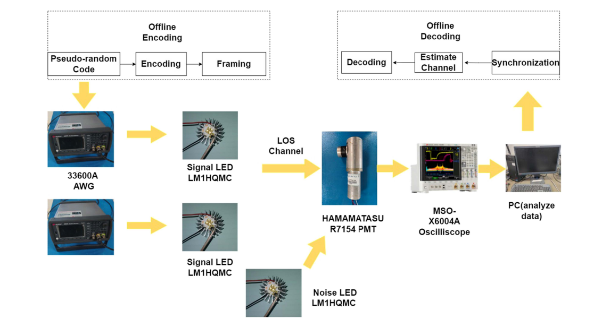
JLT 24IEEE Journal of Lightwave Technology (JLT), 2024.
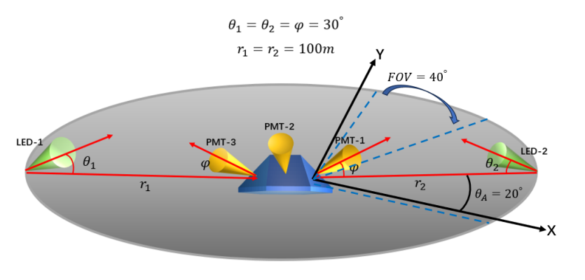
TCOM 24IEEE Transactions on Communications (TCOM), 2024.
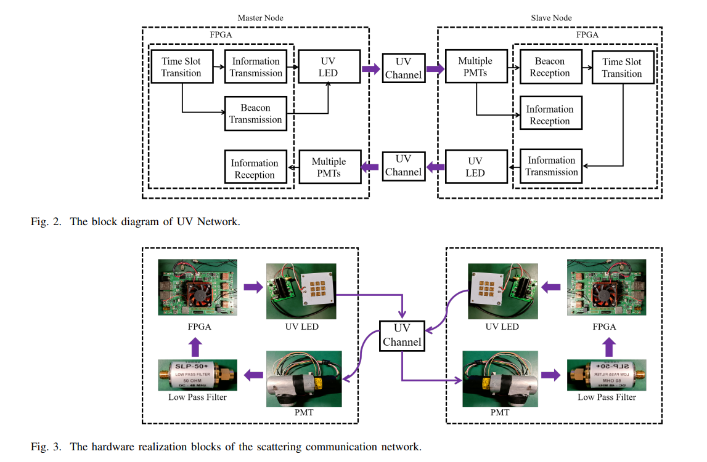
CNSDSP 24International Symposium on Communication Systems, Networks and Digital Signal Processing (CNSDSP), 2024.
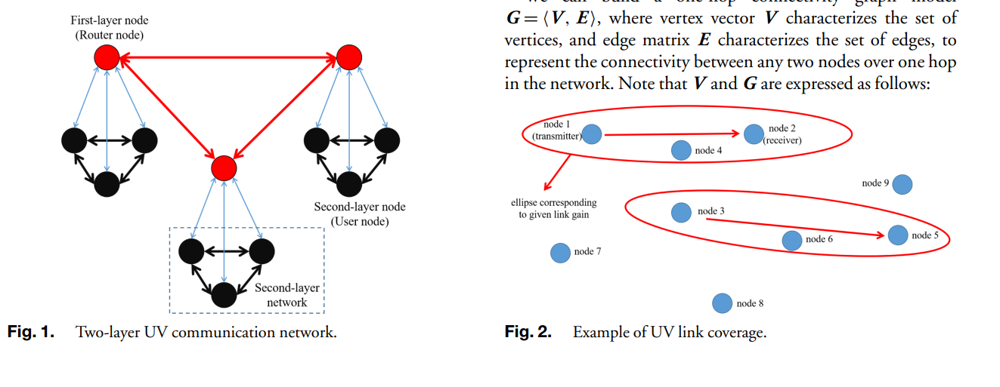
JOCN 23Journal of Optical Communications and Networking (JOCN), 2023.
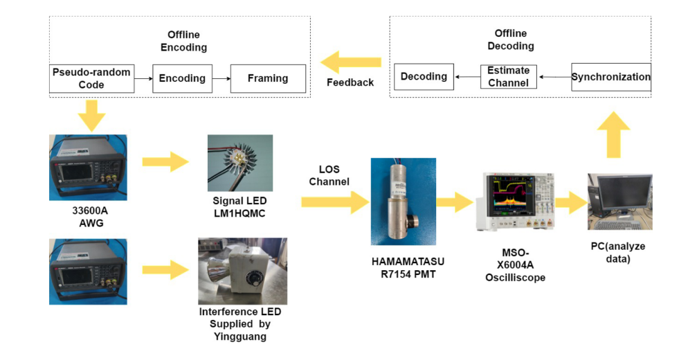
OE 23Optics Express (OE), 2023.
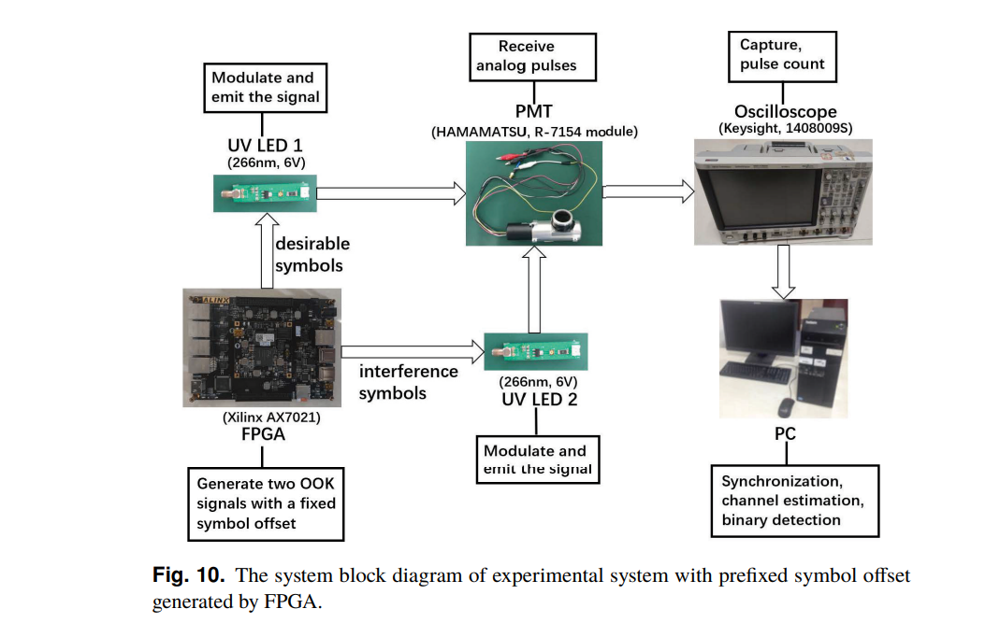
OE 22Optics Express (OE), 2022.